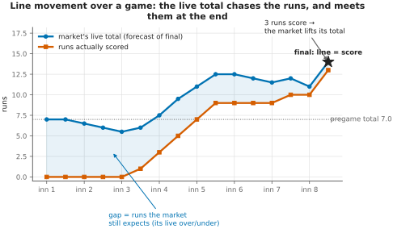
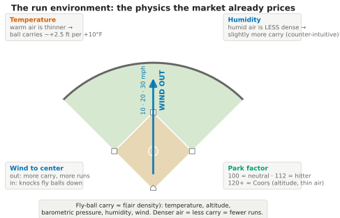
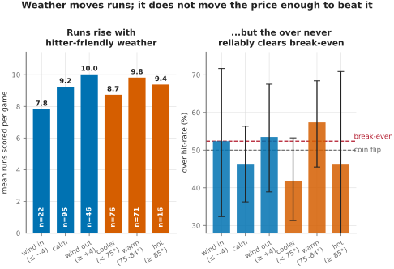

Repository documentation: illustrative figures for talks and curious readers. This is not part of the paper and carries no citable claim. The rigorous versions of everything shown here live in the paper's conditional tests; these panels use small buckets and wide intervals and are meant to build intuition, not to support inference.
Companion to "Does the Market Already Know?" · July 2026
The paper's transfer function measures, across 6,414 events, how far the live total moves after each play. This figure shows the same thing for a single game, so the mechanism is visible rather than averaged. Everything is reconstructed from the committed snapshots: the live total is the market's forecast of remaining runs plus the runs already scored, so it is the actual over/under number a bettor would have watched.

Figure S1. One game's live over/under from first pitch through the eighth. The number opens at the 7.0 pregame total, drifts down through three scoreless innings as the time left to score runs out, then climbs with each scoring burst until it meets the runs actually scored at the game's final of 13. The shaded gap is the market's live over/under on the rest of the game, and it closes to zero as the game ends. This is a sharp market updating in real time, which is exactly why static pregame beliefs, however true, do not survive contact with the live line.
Scoring is a function of air density, and air density is a function of temperature, altitude, barometric pressure, humidity, and wind. These relationships are well established, and none of them is a secret. That is precisely the paper's point: because the run environment is public and understood, a sharp market prices it, and in our sample it slightly over-adjusts.

Figure S2. Warm, thin, high-altitude air lets fly balls carry; a wind blowing out to center adds carry, a wind blowing in knocks fly balls down; humid air is, counter-intuitively, slightly less dense than dry air, so it too adds a little carry. Weather and park genuinely move runs. On this evidence they do not move the price enough to beat it: in the conditional test, hitter-friendly overs hit 46 percent against 50 percent, so if anything the market over-adjusts for exactly the conditions a bettor would notice. The effect is real; the edge is not.
Figure S2 is textbook physics. This one is our 163 games. It shows, in a picture, the same thing the paper's conditional test found: weather genuinely moves runs, and the market moves the line with it, so the edge a naive bettor expects has already been priced away.

Figure S3. Left: mean runs per game climb with hitter-friendly weather, from 7.8 with the wind blowing in to 10.0 with it blowing out, and with warmer temperatures. Right: the over's hit rate by the same buckets, with 95 percent Wilson intervals. No weather bucket reliably clears the 52.4 percent break-even, and every interval straddles the coin flip; the apparent warm-weather rate is small-sample noise, not a signal. The overall over hit rate is 49 percent. With 163 games the buckets are small, so read the direction, not the decimals: the paper's conditional test is the rigorous version of this picture, and it reaches the same verdict.